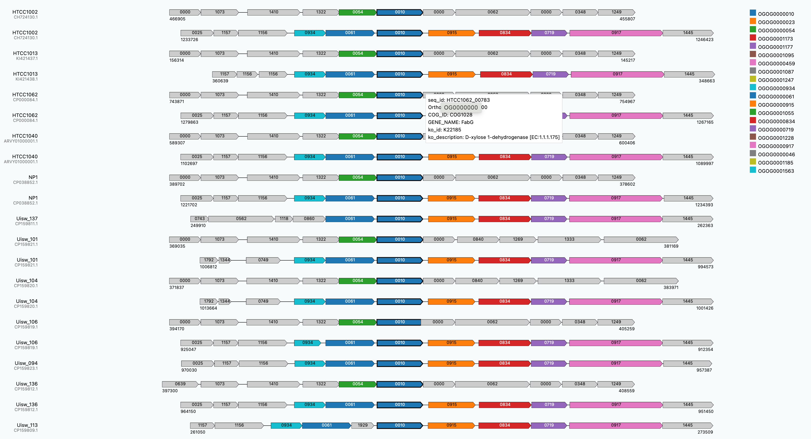
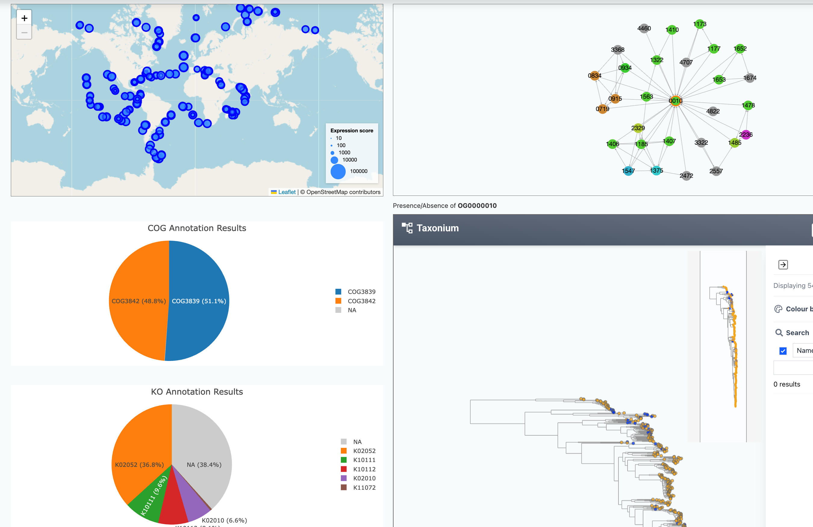
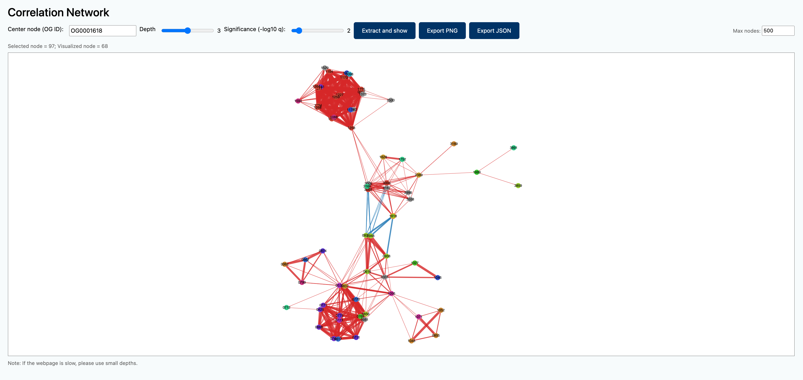
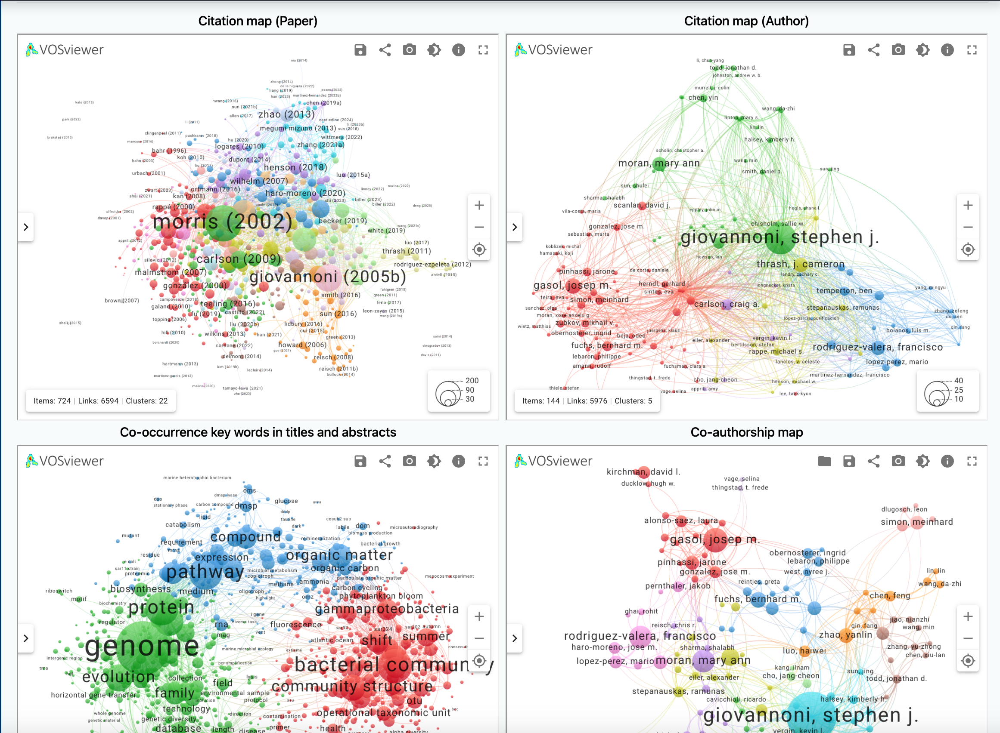
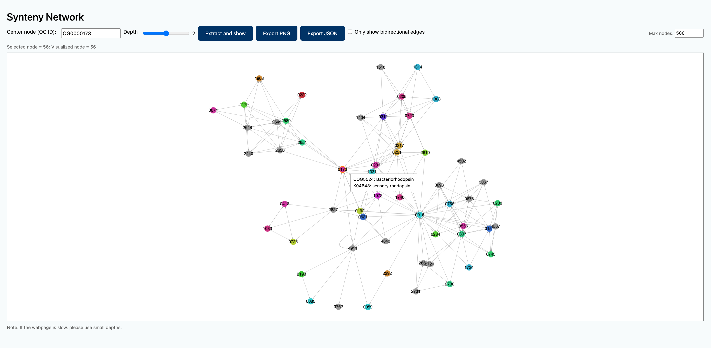
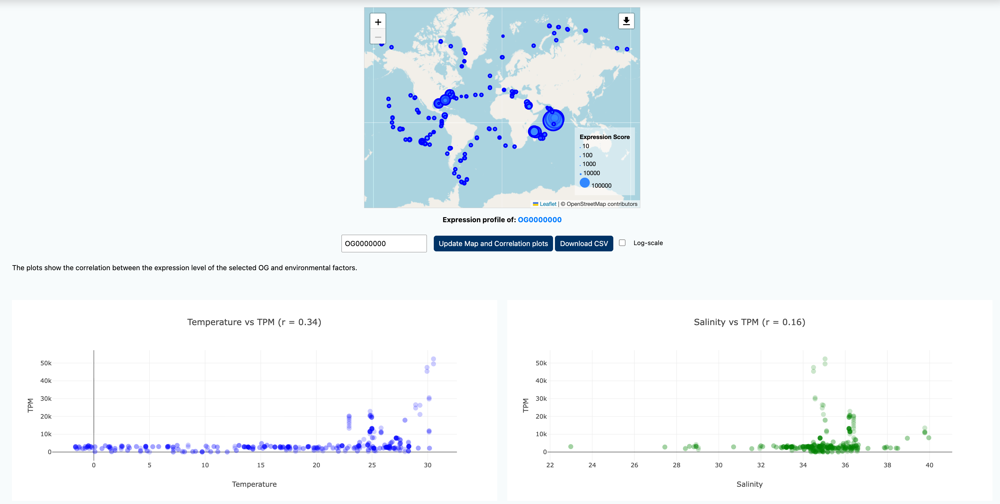

Collection
Atlas dashboard
Overview
Explore SAR11 genome diversity, functional annotations, and metatranscriptomic patterns from a single starting point.
The SAR11 Genome Atlas is an interactive genome and gene catalog for the SAR11 clade, the most abundant bacterial lineage in the ocean. Review the composition and functional annotation of the current collection, then continue to genome-, orthogroup-, and metatranscriptome-level views.
Loading atlas summary
–
genomes
– subclades represented
–
proteins
– with ≥1 annotation
–
orthogroups
99.3% of genes assigned
Functional coverage
Annotation overlap
Genome landscape
Genome size and GC content
Proteome landscape
Protein length distribution
Proteins ≥2,000 aa are grouped in the final bin.
Explore
Continue to specialized atlas views

Genome Information
Explore SAR11 sampling locations, phylogenetic placement, and genome metadata in the atlas.

OG Information Viewer
Combine functional annotations with genome distribution, neighboring relationships, Expression Scores, and protein structures.

CORGIAS Network
Explore statistically supported co-occurrence and anti-occurrence relationships among SAR11 orthogroups.

Literature
Explore citation, keyword, and co-authorship maps alongside searchable SAR11 publication records.

Neighboring Genes
Compare local gene arrangements around a selected orthogroup across SAR11 genomes.

Metatranscriptome Viewer
Map orthogroup Expression Scores across ocean samples and examine their environmental associations.
Atlas summary data could not be loaded. Please refresh the page.